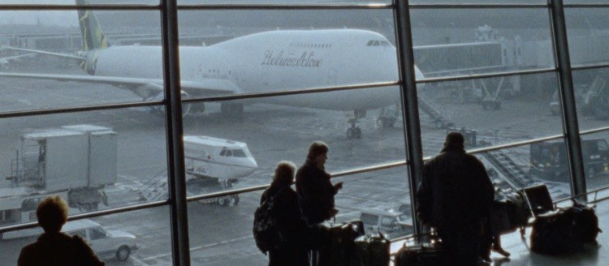
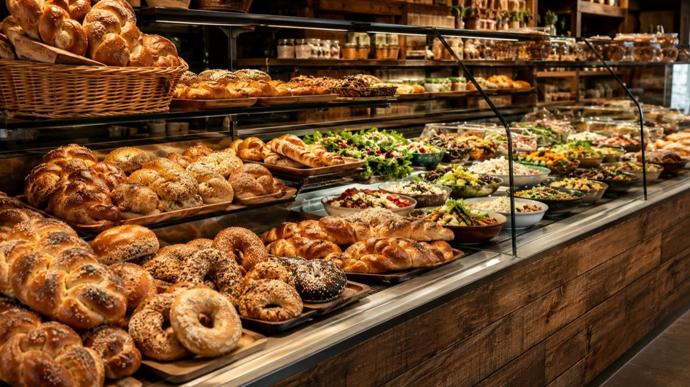

לונדון היא עיר מדהימה, וגם אחת המורכבות באירופה. רוב האכזבות שאנחנו שומעים עליהן לא מגיעות מהעיר עצמה, אלא מהחלטות שהתקבלו חודש קודם מול המסך.
מלון שנראה מציאה ומתברר כרבע שעה הליכה מכל תחנה. יום שרובו עבר ברכבת התחתית. אטרקציה חינמית שנגמרה שבועות מראש. כרטיס אשראי שגבה עמלה על כל קנייה. אלה לא אסונות, אבל יחד הם מוחקים ימים שלמים מחופשה קצרה.
ריכזנו כאן ארבעים וחמש טעויות שחוזרות אצל מטיילים ישראלים, מחולקות לשמונה קטגוריות. לכל אחת יש הסבר למה היא עולה ביוקר, ומה עושים במקום. אפשר לקרוא הכול, ואפשר לקפוץ ישר למה שרלוונטי לכם.
מה הטעות הכי נפוצה שמטיילים עושים בלונדון?
בחירת מלון לפי המחיר בלבד, בלי לבדוק כמה דקות הליכה יש לתחנת הרכבת התחתית הקרובה ואילו קווים עוברים בה. זו הטעות היחידה שגובה מחיר בכל בוקר מחדש, לאורך כל הטיול.
לא נמצאה טעות שמתאימה לחיפוש. נסו מילה אחרת, למשל מלון, אויסטר, ילדים או מזומן.
🏨
טעויות במלונות ולינה בלונדון
איפה שתישנו קובע כמה מהיום באמת יישאר לכם לטייל
טעות 1לבחור מלון בלונדון רק לפי המחיר
זו הטעות היקרה ביותר, כי היא לא מתגלה ברגע ההזמנה אלא בכל בוקר מחדש. חדר שנראה מציאה מתברר כמרוחק מכל מה שרציתם לראות.
מה זה עולה
זוג שמבזבז ארבעים דקות נוספות ביום על הגעה לתחנה מפסיד כמעט חמש שעות בחופשה של שבוע. זה יום שלם בעיר.
✅ הפתרון
לפני שסוגרים חדר, פתחו את גוגל מפות ובדקו שלושה דברים: כמה דקות הליכה לתחנה הקרובה, אילו קווים עוברים בה, וכמה תחנות זה מהיעד המרכזי שלכם.
המרחק האווירי מהמרכז לא אומר כמעט כלום בלונדון. מה שקובע הוא הזמן עד לרציף.
למה זו בעיה
חדר באזור 2 שנמצא שלוש דקות הליכה מתחנה עדיף על חדר באזור 1 שנמצא רבע שעה ממנה. שתי הדקות עשרה שהפרש הזה מוסיף, כפול הלוך ושוב, כפול שבעה ימים, הן יותר מחמש שעות.
ובלונדון גם יורד גשם. רבע שעה הליכה בגשם עם ילדים היא לא אותה רבע שעה.
✅ הפתרון
קבעו לעצמכם רף: עד שמונה דקות הליכה לתחנה. מעל זה, החדר צריך להיות זול משמעותית כדי להצדיק את זה.
זה המשפט שמופיע כמעט בכל מודעת לינה בלונדון, והוא כמעט תמיד לא מדויק.
למה זו בעיה
עשרים הדקות האלה נמדדות בדרך כלל מהרציף ליעד, ולא מהדלת שלכם. מה שלא נספר שם: ההליכה לתחנה, ההמתנה לרכבת, ההחלפה בדרך, וההליכה מהתחנה ליעד. בפועל זה יוצא ארבעים עד חמישים דקות.
ו"המרכז" הוא לא נקודה אחת. וסטמינסטר, הסיטי ודרום קנזינגטון רחוקים זה מזה יותר משנדמה.
Westminster · The City · South Kensington
✅ הפתרון
אל תסתמכו על התיאור. קחו כתובת אמיתית, הכניסו אותה לגוגל מפות מול היעד שהכי תבקרו בו, ובדקו בשעת בוקר של יום חול. זו השעה שבה תעשו את הנסיעה הזאת.
טעות 4לבחור אזור שלא מתאים לסוג הטיול
אנשים בוחרים אזור לפי שם שהם מכירים, ולא לפי מה שהם מתכננים לעשות.
למה זו בעיה
לכל אזור בלונדון יש אופי אחר. המרכז נוח להליכה אבל יקר ורועש, ובחלקו מתרוקן בערב. צפון ומערב שקטים ומשפחתיים, ומשלמים על זה בזמן נסיעה. המזרח זול יותר ומעניין, אבל מרוחק מרוב אתרי התיירות הקלאסיים.
משפחה עם ילדים קטנים שבוחרת אזור לילה תוסס תגלה את זה בלילה הראשון. זוג שבא לבלות ובוחר פרוור שקט יבלה את הערבים ברכבת.
✅ הפתרון
תשאלו את עצמכם קודם מה סוג הטיול, ורק אז תבחרו אזור. אין אזור אחד נכון, יש התאמה.
חדרי מלון בבריטניה בנויים אחרת ממה שישראלים מצפים, וזה מפתיע בעיקר משפחות.
למה זו בעיה
חדרים בלונדון קטנים משמעותית מהמקובל, במיוחד במלונות ותיקים במרכז. מיזוג אוויר הוא לא מובן מאליו והרבה מלונות פשוט אין בהם, מה שמורגש בגל חום בקיץ. חדר ל"שלושה" הוא לעיתים קרובות מיטה זוגית ומיטה מתקפלת צרה.
מנגד, קומקום עם תה וקפה הוא כמעט תמיד סטנדרט, וזה חוסך כסף אמיתי בבקרים.
✅ הפתרון
קראו את פירוט החדר ולא רק את שם החדר. חפשו במפורש מיזוג, גודל במטרים, וסידור המיטות. אם אתם משפחה, דירה עם מטבחון עשויה לצאת זולה ונוחה יותר ממלון.
המערכת מצוינת ברגע שמבינים איך משלמים עליה, ויקרה כשלא
טעות 6לקנות כרטיס אויסטר פיזי כשלא צריך אותו
אנשים קונים אויסטר מתוך הרגל, כי ככה זה עבד פעם.
למה זו בעיה
כרטיס אויסטר פיזי עולה 10.50 ליש״ט בקנייה ראשונית, וזו עמלה שלא מוחזרת ולא פיקדון. רק היתרה שלא נוצלה ניתנת להחזר. אם יש לכם כרטיס אשראי עם תשלום אלחוטי, אתם פשוט לא צריכים אותו.
מה זה עולה
משפחה של ארבעה שקנתה ארבעה כרטיסים מיותרים שילמה 42 ליש״ט על עמלות שלא יחזרו.
✅ הפתרון
הצמידו ישירות את כרטיס האשראי או את הטלפון. אויסטר פיזי שווה רק אם אין לכם כרטיס אלחוטי, או אם אתם זקוקים לכרטיס נפרד לילד.
זו טעות קטנה שגובה מחיר מלא, והיא קורית בעיקר לזוגות שמחליפים כרטיסים.
למה זו בעיה
המערכת מזהה נסיעה לפי הכרטיס. אם הצמדתם כרטיס אחד בכניסה ואחר ביציאה, היא רואה שתי נסיעות שלא הסתיימו, וגובה מחיר מלא על שתיהן.
אותו דבר קורה כשמצמידים פעם את הטלפון ופעם את הכרטיס הפיזי, גם אם זה אותו חשבון בנק.
✅ הפתרון
החליטו על אמצעי תשלום אחד לכל אדם, והישארו איתו לאורך כל הטיול. אם אתם משתמשים בטלפון, תמיד בטלפון.
טעות 8לקנות כרטיס בודד לכל נסיעה
מי שקונה כרטיס נייר בכל פעם משלם הכי הרבה, ומוותר על ההגנה הכי חשובה במערכת.
למה זו בעיה
כל התשלומים האלחוטיים, גם באויסטר וגם באשראי, כפופים לתקרה יומית ולתקרה שבועית. המשמעות: לא משנה כמה נסיעות תעשו באותו יום באותם אזורים, לא תשלמו יותר מהתקרה. כרטיס נייר בודד לא נספר לתקרה בכלל.
מה זה עולה
ביום עמוס אפשר לשלם כפול מהתקרה היומית, פשוט כי כל נסיעה נמכרה בנפרד.
✅ הפתרון
הצמידו אלחוטית תמיד, גם לנסיעה אחת. המערכת תעצור לגבות מכם ברגע שתגיעו לתקרה, לבד ובלי שתעשו כלום.
לונדון מוגשת על ידי שישה שדות תעופה, והם רחוקים מאוד זה מזה. הטיסה הזולה לא תמיד נשארת זולה.
למה זו בעיה
ההבדל דרמטי. היתרו נמצא 16 מייל מהמרכז ומחובר בקו אליזבת בתעריף תחבורה ציבורית רגיל. גטוויק נמצא 28 מייל וההגעה ברכבת בתעריף רכבת, לא בתעריף העיר. לוטון נמצא 34 מייל, וההגעה כוללת שאטל ואז רכבת, בערך שעה.
Heathrow · Gatwick · Stansted · Luton · London City · Southend
טיסה שזולה בחמישים ליש״ט לסטנסטד יכולה לצאת יקרה יותר בפועל, אחרי עלות הנסיעה למרכז כפול מספר האנשים כפול הלוך ושוב.
✅ הפתרון
חשבו את המחיר המלא: הכרטיס ועוד ההגעה, לכל הנוסעים, בשני הכיוונים. ואם נוחתים בשעה קשה עם מזוודות וילדים, הסעה פרטית עשויה לצאת זולה מארבעה כרטיסי רכבת.
המונית השחורה היא סמל של לונדון, ולכן אנשים מניחים שהיא גם הדרך הנורמלית להתנייד.
למה זו בעיה
המונית השחורה היא אמצעי התחבורה היקר ביותר בעיר, והיא נוסעת במונה. בשעות העומס, כשהתנועה במרכז זוחלת, המונה ממשיך לרוץ גם כשהרכב עומד. נסיעה שנראית קצרה במפה יכולה לקחת ארבעים דקות ולעלות בהתאם.
ובלונדון, בניגוד לרוב הערים, הרכבת התחתית כמעט תמיד מהירה יותר מרכב במרכז.
✅ הפתרון
הרכבת התחתית והאוטובוסים הם ברירת המחדל. שמרו את המונית למקרים שבהם היא באמת עדיפה: מזוודות, שעות לילה מאוחרות, או נסיעה קצרה עם מישהו שמתקשה בהליכה.
ולמי שרוצה את החוויה: קו אוטובוס דו קומתי במסלול שעובר במרכז נותן תצפית טובה יותר, בתעריף תחבורה ציבורית.
טעות 11לא להצמיד לקורא הוורוד כשמחליפים רכבת
בכמה תחנות מעבר יש קורא כרטיסים ורוד, נפרד מהשערים הצהובים. רוב המבקרים לא יודעים מה הוא עושה ופשוט עוברים לידו.
למה זו בעיה
הקורא הוורוד מוכיח למערכת שהמסלול שלכם לא עבר דרך אזור 1, שהוא האזור היקר. בלי ההצמדה, המערכת מניחה שנסעתם בדרך היקרה וגובה בהתאם, גם אם עקפתם אותה לגמרי.
זה לא קשור לחיבור בין תחנות, שנעשה אוטומטית. זה מאמת מסלול, וזו פעולה שרק אתם יכולים לעשות.
מה זה עולה: ההפרש בין נסיעה דרך אזור 1 לנסיעה שעוקפת אותו, בכל נסיעה כזאת, לאורך כל הטיול.
✅ הפתרון
הסדר הוא צהוב בכניסה, ורוד באמצע, צהוב ביציאה. אם אתם מחליפים רכבת בתחנה שאינה באזור 1, חפשו את הקורא הוורוד על הרציף והצמידו אליו. אל תצמידו לשערים הצהובים באמצע, כי זה יסיים לכם את הנסיעה.
מתכננים יום לפי מפת הקווים, ומגלים בבוקר שהקו שעליו נשען כל היום פשוט לא פועל.
למה זו בעיה
עבודות תחזוקה בסופי שבוע הן שגרה ולא חריג. קטעי קו שלמים נסגרים, ואוטובוס חלופי איטי בהרבה מהרכבת שהוא מחליף. הסגירות מפורסמות רק שבועיים עד שלושה מראש, ולכן מי שתכנן חודש קודם לא יכול היה לדעת.
ויש תאריך אחד קיצוני: ב-25 בדצמבר כל הרשת מושבתת. אין רכבת תחתית, אין אוטובוסים, אין רכבת קלה, אין קו אליזבת. פועלים רק מוניות, רכבים מוזמנים ואופניים להשכרה.
✅ הפתרון
בדקו את מצב השירות באתר התחבורה בערב שלפני, בכל יום של הטיול, ובמיוחד בסופי שבוע. זו בדיקה של שלושים שניות שמצילה בקרים שלמים.
ואם אתם בלונדון ב-25 בדצמבר, מרחק הליכה הוא כל התוכנית, או מונית שהוזמנה מראש.
רוב האנשים בונים רשימה של מה שהם רוצים לראות, ואז מנסים לדחוס אותה לימים. זה הסדר ההפוך.
למה זו בעיה
מעבר מקצה אחד של העיר לשני שורף יותר משעה לכל כיוון, וזה לפני ההמתנה. יום שמורכב משלוש נקודות בשלושה אזורים שונים הוא יום שרובו עבר ברכבת התחתית.
מה זה עולה
שלוש נסיעות ארוכות ביום הן כשעתיים וחצי. על פני חמישה ימים, יומיים שלמים.
✅ הפתרון
יום אחד, אזור אחד. העיר מתחלקת לאשכולות טבעיים. וסטמינסטר עם ביג בן, המנזר והלונדון איי הם יום אחד. הסיטי עם מצודת לונדון, גשר המגדלים וסנט פול הם יום שני. דרום קנזינגטון עם שלושת המוזיאונים הגדולים הוא יום שלישי, והם צמודים ממש.
Westminster · The City · South Kensington · Camden · Greenwich
ההיגיון מובן. הטיול קצר, הרשימה ארוכה, וחבל לפספס. בפועל זה מייצר יום שבו לא נהניתם משום דבר.
למה זו בעיה
אתרים בלונדון גדולים הרבה יותר ממה שנראה מבחוץ. המוזיאון הבריטי לבדו יכול לבלוע ארבע שעות בלי שתשימו לב. מצודת לונדון היא חצי יום. כשדוחסים שש עצירות, כל אחת מקבלת ארבעים דקות, וזה בדיוק הזמן שנדרש רק כדי להיכנס ולהתמצא.
✅ הפתרון
שלוש עצירות ליום הן המספר שעובד. אחת גדולה בבוקר, אחת בינונית אחרי הצהריים, ואחת קלה לקראת ערב. אם נשאר זמן, תמיד אפשר להוסיף.
טעות 15לא להשאיר שום זמן פנוי במסלול
מסלול שממולא מהשעה השמינית בבוקר עד תשע בערב נראה יעיל על הנייר, ומתפרק ביום הראשון.
למה זו בעיה
תמיד קורה משהו. תור ארוך מהצפוי, קו שנסגר לתחזוקה בסוף שבוע, גשם פתאומי, או פשוט מקום שהתגלה כמעניין יותר ממה שחשבתם. מסלול בלי אוויר הופך כל עיכוב קטן לתגובת שרשרת שמפילה את שאר היום.
ולונדון היא עיר שהדברים הכי טובים בה קורים בדיוק בזמן שלא תכננתם. שוק שנתקלתם בו, רחוב שנכנסתם אליו במקרה, פאב שנראה טוב.
✅ הפתרון
השאירו חצי יום פתוח לגמרי בכל שלושה ימים, ואל תקבעו כלום בשעה שאחרי אטרקציה גדולה. זה לא בזבוז, זה מה שמאפשר לשאר המסלול לעבוד.
ותכננו מראש חלופה ליום גשום, כדי שלא תבזבזו את הבוקר בחיפוש.
מתכננים טיול ולא בודקים אם באותו שבוע יש בעיר משהו שמשנה את כל התמונה.
למה זו בעיה
לונדון מארחת אירועים שמשתקים אזורים שלמים, סוגרים רחובות ומעלים מחירי לינה. קרנבל נוטינג היל בסוף אוגוסט, מרתון לונדון באביב, ליל המדורות בחמישה בנובמבר, ווימבלדון ביולי, ושווקי חג המולד מסוף נובמבר.
Notting Hill Carnival · London Marathon · Bonfire Night · Wimbledon
וזה עובד גם הפוך. אתרים נסגרים לשיפוץ בלי שהדבר מגיע לכותרות. הפלנטריום ומרכז האסטרונומיה במצפה הכוכבים בגריניץ׳ סגורים מאז ספטמבר 2025, ומי שתכנן ערב אסטרונומיה שם יגלה את זה בשער.
✅ הפתרון
לפני שסוגרים תאריכים, בדקו מה קורה בעיר באותו שבוע. לפעמים תגלו שכדאי להזיז את הטיול ביומיים, ולפעמים שנפלתם על משהו ששווה לתכנן סביבו.
יש בלונדון קהילה יהודית גדולה, ולכן ההנחה היא שתמיד יימצא משהו קרוב. זו הנחה שגויה.
למה זו בעיה
המקומות הכשרים מרוכזים בצפון מערב ולא מפוזרים בעיר. מתוך 78 המקומות בהשגחה שמופו, 23 בגולדרס גרין ו-14 בהנדון. בכל שאר העיר, כולל כל אזורי התיירות המרכזיים, מפוזרים שבעה מקומות בלבד.
Golders Green · Hendon · Edgware · Borehamwood
ויש עוד דבר שמפתיע: רבים מהמקומות סוגרים מוקדם בערב שישי ולא נפתחים עד מוצאי שבת. סוף שבוע דורש תכנון נפרד לגמרי.
✅ הפתרון
אל תשאלו רק איפה יש מקום כשר, אלא איפה הוא ביחס למסלול של אותו יום. אם היום בצפון מערב, זה פשוט. אם הוא במרכז, תכננו מראש או קחו איתכם.
סופרמרקטים בריטיים גדולים מחזיקים מדף כשר סביר, וזו אפשרות טובה לארוחת בוקר ולנשנושים.
ההנחה היא שתמיד אפשר לקנות כרטיס בכניסה. זה נכון לחלק מהמקומות, ולא נכון בדיוק לאלה שהכי רציתם.
למה זו בעיה
חלק מהאטרקציות המבוקשות נסגרות שבועות מראש. סקיי גארדן היא הדוגמה הכואבת ביותר, כי הכניסה אליה חופשית לגמרי אבל חייבים להזמין מקום. אנשים מגלים את זה ביום שתכננו ללכת. סיור האולפנים של הארי פוטר נסגר עוד קודם.
Sky Garden · Harry Potter Studio Tour · The Shard · Tower of London
✅ הפתרון
ברגע שסגרתם תאריכים, הזמינו מיד את שלושת הדברים שהכי חשובים לכם. את השאר אפשר להשאיר פתוח.
וכדאי לדעת ש58 מתוך 92 המקומות ברשימה שלנו הם בכניסה חופשית, כולל כל המוזיאונים הלאומיים הגדולים. את אלה לא צריך להזמין בכלל.
אנשים נכנסים לאתר הראשון שגוגל מציע, קונים במחיר המבוקש, ולא יודעים שיש עוד שלוש דרכים לקנות את אותו כיסא.
למה זו בעיה
הפער בין המחירים על אותו מופע ואותו ערב תלוי לגמרי בערוץ הרכישה ובכמה אתם גמישים.
הדוכן הרשמי של TKTS בלסטר סקוור מוכר כרטיסים מוזלים לאותו יום וגם מראש. דמי הטיפול שם הם שלוש ליש״ט על כרטיס מוזל וליש״ט אחת על כרטיס במחיר מלא, ואפשר לקנות רק פיזית בדוכן. בנוסף, הרבה מופעים מקצים מספר קטן של כרטיסים זולים בהגרלה יומית.
West End · TKTS Leicester Square
✅ הפתרון
אם אתם יודעים בדיוק איזה מופע ואיזה תאריך, קנו ישירות מאתר התיאטרון. זו האפשרות הבטוחה ביותר, בלי סיכון לזיוף ובלי עמלות מפתיעות. גמישים לגבי המופע? לכו ל-TKTS. גמישים לגמרי? בדקו את ההגרלות.
זו אולי הטעות שגורמת לאכזבה הגדולה ביותר, כי היא מתגלה רק כשמגיעים לשער.
למה זו בעיה
כרטיס למשחק פרמייר ליג הוא לא משהו שקונים שבוע לפני. רוב הכרטיסים נמכרים קודם כל למנויי עונה ולחברי מועדון, ומה שנשאר לקהל הרחב מועט. מה שנותר הוא שוק משני מלא באתרים שאינם רשמיים.
שם יש שני סיכונים: כרטיס מזויף, וכרטיס אמיתי שנרכש על שם אדם אחר. במקרה השני הכרטיס יכול להיפסל בשער גם אם הוא אותנטי לגמרי.
✅ הפתרון
התחילו חודשים מראש. הדרך הרשמית היא להירשם כחבר מועדון באתר הקבוצה, וגם אז יש סדר עדיפות לפי ותק. לרוב המועדונים יש מערכת החלפה רשמית שבה מנויים מחזירים כרטיסים.
אם התאריכים קבועים ואי אפשר לתכנן מראש, סיור באצטדיון הוא חלופה אמיתית שאפשר להזמין בביטחון.
מגיעים לאתר בארבע וחצי ומגלים שהכניסה האחרונה הייתה בארבע.
למה זו בעיה
שעת הסגירה ושעת הכניסה האחרונה הן שני דברים שונים, והפער ביניהן הוא לרוב שלושים עד שישים דקות. אתרים גדולים סוגרים את הקופות מוקדם כדי לפנות את המבקרים בזמן.
ובנוסף, שעות הפתיחה משתנות לפי עונה. אתר שפתוח עד שש בקיץ עשוי לסגור בארבע בחורף, וזה בדיוק בחודשים שבהם חשוך כבר בארבע.
✅ הפתרון
בדקו באתר הרשמי של האתר עצמו, לא בגוגל, ורשמו לעצמכם את שעת הכניסה האחרונה ולא את שעת הסגירה. תכננו להגיע שעה לפניה לפחות.
טעות 22להניח שכל אטרקציה מתאימה לילדים
אתר שמופיע בכל רשימת המלצות לא בהכרח מתאים למי שנוסע עם ילדים.
למה זו בעיה
הרבה מהאתרים המרכזיים בלונדון דורשים עמידה בתור, הליכה ממושכת וקומות רבות של מדרגות במבנים היסטוריים בלי מעלית. מוזיאון שמרתק מבוגר יכול להיות שעתיים של סבל לילד בן שש.
ומנגד, יש אתרים שילדים אוהבים במיוחד ושמבוגרים לא חושבים עליהם. מוזיאון המדע עם תצוגות להפעלה, ומוזיאון הטבע עם שלדי הדינוזאורים, שניהם בכניסה חופשית.
✅ הפתרון
לכל יום, בחרו אטרקציה אחת "של המבוגרים" ואחת "של הילדים", ואל תנסו למצוא משהו שמתאים מושלם לכולם. ושלבו פארק, כי לונדון מלאה בהם והם מצילים ימים.
ההרגל הישראלי הוא להגיע עם מעטפה. בלונדון זה כמעט מיותר, ולרוב גם יקר יותר.
למה זו בעיה
לונדון היא אחת הערים הכי לא מזומניות בעולם. כמעט כל עסק מקבל תשלום אלחוטי, מדוכני שוק ועד אוטובוסים, וחלק מהמקומות כבר לא מקבלים מזומן בכלל.
וההמרה עצמה עולה. שער ההמרה בדלפק, בשדה או בעיר, גרוע כמעט תמיד מהשער שתקבלו בעסקה בכרטיס. מזומן שנשאר בסוף הטיול עובר המרה שנייה בחזרה, והפסדתם פעמיים.
✅ הפתרון
קחו סכום קטן למקרי חירום, בערך עשרים עד חמישים ליש״ט למשפחה, והשאר בכרטיס. אל תחליפו בשדה התעופה, שם השערים הגרועים ביותר.
טעות 24לאשר חיוב בשקלים במסוף
זו הטעות הכי שקטה ברשימה, כי היא נראית כמו טובה שעושים לכם.
למה זו בעיה
כשמצמידים כרטיס ישראלי, המסוף שואל לפעמים אם תרצו לחייב בשקלים במקום בליש״ט. זה נשמע נוח ואפילו שקוף. בפועל, ההמרה נעשית אז על ידי בית העסק ולא על ידי חברת האשראי שלכם, והשער שלו גרוע יותר.
התוספת היא בדרך כלל כמה אחוזים לעסקה. על קנייה אחת זה זניח. על שבוע של ארוחות, כרטיסים וקניות, זה מסתכם.
✅ הפתרון
תמיד לבחור לשלם בליש״ט. בכל מסוף, בכל מכשיר כספומט, בכל אתר. אם המסך מציע לכם שקלים, זו לא טובה.
טעות 25לא לבדוק את העמלות של הכרטיס לפני הנסיעה
לא כל הכרטיסים מתנהגים אותו דבר בחו״ל, וההבדל ביניהם מצטבר.
למה זו בעיה
חלק מהכרטיסים גובים עמלת המרת מטבע על כל עסקה, וחלק לא. חלק גובים עמלה קבועה על משיכת מזומן מכספומט, בנוסף לעמלה שהמכשיר עצמו גובה. מי שמושך מזומן שלוש פעמים בטיול משלם על זה פעמיים בכל פעם.
✅ הפתרון
שבוע לפני הטיסה, בדקו בפירוט הכרטיס מה העמלות בחו״ל. אם יש לכם יותר מכרטיס אחד, קחו איתכם את זה עם העמלות הנמוכות ותשתמשו בו כברירת מחדל. וקחו כרטיס שני כגיבוי, בארנק נפרד.
ואל תשכחו לעדכן את חברת האשראי שאתם נוסעים, כדי שהעסקה הראשונה לא תיחסם.
טעות 26לשלם על מה שאפשר לקבל בחינם
לונדון יקרה, ולכן ההנחה היא שכל דבר טוב עולה כסף. זו טעות שעולה מאות ליש״ט למשפחה.
למה זו בעיה
כל המוזיאונים הלאומיים הגדולים בבריטניה פתוחים בכניסה חופשית, וזו לא הטבה זמנית אלא מדיניות ותיקה. המוזיאון הבריטי, הגלריה הלאומית, מוזיאון הטבע, מוזיאון המדע, טייט מודרן וויקטוריה ואלברט, כולם בלי תשלום.
The British Museum · The National Gallery · Tate Modern · V&A
גם התצפית הגבוהה ביותר שהכניסה אליה חופשית לא עולה כלום, וכך גם רוב הפארקים, השווקים והשכונות.
מה זה עולה
58 מתוך 92 המקומות ברשימה שלנו הם בכניסה חופשית. משפחה שקנתה כרטיס משולב יקר בלי לבדוק, שילמה על חצי מהרשימה פעמיים.
✅ הפתרון
לפני שקונים כרטיס משולב כלשהו, בדקו כמה מהאתרים שבו אתם באמת מתכננים לבקר, וכמה מהם חינמיים ממילא. לרוב המטיילים כרטיס כזה לא משתלם.
האוכל הוא ההוצאה שהכי קל לאבד עליה שליטה, כי היא מתפזרת על עשרות תשלומים קטנים.
למה זו בעיה
משפחה שאוכלת שלוש ארוחות מסעדה ביום במרכז לונדון מגיעה לסכומים שלא תכננה, ובדרך כלל מגלה את זה רק בדף החשבון. ארוחת צהריים במסעדה במרכז עולה פי כמה מאותה ארוחה בשוק או בסופרמרקט.
ובנוסף, בבריטניה יש תרבות טיפ שונה. במקומות רבים דמי שירות כבר מוספים לחשבון אוטומטית, ומי שלא שם לב מוסיף טיפ פעם שנייה.
✅ הפתרון
קבעו מראש תבנית: ארוחת בוקר מהסופר או מהקומקום בחדר, צהריים בשוק או בשרשרת מקומית, וערב אחד או שניים במסעדה טובה. זה מוריד את ההוצאה במידה ניכרת בלי לוותר על חוויה.
ובדקו את החשבון לפני שאתם מוסיפים טיפ. אם כתוב שם service charge, כבר שילמתם.
טעות 28לתכנן קניות בהנחה שתקבלו החזר מע״מ
ישראלים רבים מתקצבים קנייה יקרה בלונדון בהנחה שיחזירו להם כחמישית מהסכום בשדה התעופה. זה כבר לא קיים.
למה זו בעיה
בריטניה ביטלה את החזר המע״מ לתיירים בינואר 2021, וההסדר לא הוחזר. אין דלפקי חותמת בשדות התעופה עבור סחורה שאתם נושאים איתכם, ואין למי לפנות. הנוסח הרשמי היום מאפשר קנייה ללא מע״מ רק כשהחנות שולחת את הסחורה ישירות לכתובת מחוץ לבריטניה.
הרבה מדריכים ופוסטים שנכתבו לפני 2021 עדיין מופיעים בגוגל ומבטיחים את ההחזר.
מה זה עולה: פער של כחמישית בין התקציב המתוכנן לתשלום בפועל, בדיוק על הפריטים היקרים.
✅ הפתרון
תמחרו כל קנייה במחיר המדף המלא, בלי הנחה עתידית. אם מדובר בפריט יקר במיוחד, שאלו בחנות על משלוח ישיר לישראל, שהוא המסלול היחיד שנשאר.
טעות 29לא לחשב את המכס הישראלי בדרך חזרה
הקנייה נגמרת בלונדון, אבל החשבון לפעמים ממשיך בנתב״ג.
למה זו בעיה
הפטור האישי הוא 200 דולר לכל נכנס מגיל שנתיים ומעלה. מה שרוב האנשים לא יודעים הוא הכלל השני: אם ערכו של פריט בודד עולה על 200 דולר, המס מחושב על מלוא ערכו ולא על ההפרש.
ויש כלל שלישי שמפיל משפחות: אי אפשר לאחד את הפטורים של כמה נוסעים כדי לכסות פריט אחד יקר. משפחה של ארבעה לא יכולה לצרף 800 דולר עבור תיק אחד.
מה זה עולה: מתנה אחת יקרה יכולה להוסיף מאות שקלים בלתי צפויים בכניסה לארץ.
✅ הפתרון
עדיף כמה פריטים בינוניים על פריט אחד יקר, ולפצל בין בני המשפחה כשמדובר בפריטים נפרדים. שמרו קבלות, כי בלעדיהן השווי נקבע על ידי המכס ולא על ידכם.

✈️
טעויות לפני הטיסה ללונדון
הדברים שאם לא סידרתם, שאר המדריך כבר לא רלוונטי
טעות 30לטוס בלי אישור כניסה ETA
זו הטעות היחידה ברשימה שיכולה למנוע מכם לעלות על המטוס.
למה זו בעיה
בלי אישור ETA מאושר לא עולים על הטיסה. העלות היא 20 ליש״ט לאדם, האישור תקף לשנתיים או עד לפקיעת הדרכון, והוא נדרש לכל נוסע, כולל תינוקות. אין אישור משפחתי, ולכן משפחה של חמש נפשות צריכה חמישה אישורים ותשלם 100 ליש״ט.
ומה שרבים לא יודעים: גם מי שרק עובר דרך בריטניה בדרך ליעד אחר צריך אישור.
✅ הפתרון
הגישו בקשה לפחות שבועיים לפני הטיסה, ולא בערב שלפני. רוב הבקשות מאושרות מהר, אבל חלק נבדקות ידנית ואז זה לוקח זמן. ודאו שמספר הדרכון בבקשה זהה לדרכון שאיתו אתם באמת טסים.
אנשים מניחים שיסתדרו עם רשת אלחוטית של בתי קפה ושל המלון. בלונדון זה נשבר כבר בשעה הראשונה.
למה זו בעיה
כמעט כל מה שתעשו בעיר תלוי בחיבור: ניווט ברגל, בדיקה מתי הרכבת הבאה, הצגת כרטיסים שהזמנתם, ותיאום עם מי שהתפצלתם ממנו. הרכבת התחתית עצמה ברובה בלי קליטה, ולכן מה שלא הורדתם מראש לא זמין באמצע הנסיעה.
מה זה עולה
הפעלת נדידה סלולרית ישראלית ליום אחד יכולה לעלות יותר מחבילת גלישה לכל השבוע. ובלי חיבור, כל טעות ניווט מוסיפה רבע שעה.
✅ הפתרון
סדרו חיבור לפני הטיסה, לא בשדה התעופה. כרטיס סים וירטואלי מופעל מראש ועובד ברגע הנחיתה, בלי להחליף כרטיס פיזי ובלי לחפש דוכן.
ההיגיון הוא שלארבעה ימים באירופה לא קורה כלום. עד שקורה.
למה זו בעיה
בריטניה יצאה מהאיחוד האירופי, ולכן הסדרי הבריאות האירופיים לא חלים שם על ישראלים. טיפול רפואי פרטי בלונדון יקר מאוד, וגם ביקור מיון פשוט הופך במהירות לחשבון משמעותי.
ומעבר לרפואה, הביטוח מכסה ביטול טיסה, איחור ממושך ואובדן מזוודה, שהם הרבה יותר שכיחים ממקרה רפואי.
✅ הפתרון
אל תשוו רק מחיר. בדקו מה מכוסה, מה גובה ההשתתפות העצמית, ואם יש כיסוי למצב רפואי קיים. אם אתם טסים עם ציוד יקר או מתכננים ספורט, ודאו שגם זה מכוסה.
הדברים שנשכחים הם תמיד אותם דברים, והם תמיד מתגלים ברגע הכי לא נוח.
למה זו בעיה
מתאם חשמל בריטי הוא לא אותו מתאם כמו בשאר אירופה. בלעדיו הטלפון לא נטען בלילה הראשון, ואז אין ניווט ואין כרטיסים.
הפריטים שנשכחים הכי הרבה, לפי הסדר: מתאם חשמל, מטען נייד, מטריה מתקפלת, ונעליים נוחות באמת. לונדון היא עיר שהולכים בה הרבה יותר ממה שמתכננים, ויום שלישי עם נעליים לא נכונות הורס את שאר הטיול.
✅ הפתרון
עברו על רשימה מסודרת שבועיים לפני, לא בערב שלפני. בנינו כלי בדיוק לזה, והוא נשמר בטלפון שלכם בלי הרשמה ובלי חשבון.
מורידים הכול בנחיתה, בדיוק כשהחיבור הכי איטי והסבלנות הכי קצרה.
למה זו בעיה
אפליקציות התחבורה של לונדון מציגות עיכובים בזמן אמת, סגירות קווים בסופי שבוע וחלופות. בלעדיהן תגלו שהקו סגור רק כשתעמדו מול השער. וגוגל מפות במצב אופליין הוא מה שמציל אתכם בתוך הרכבת התחתית, שם אין קליטה.
ויש עוד דבר קטן: הרבה כרטיסים והזמנות נשלחים במייל. אם לא שמרתם אותם במכשיר מראש, תצטרכו חיבור כדי להציג אותם בכניסה.
✅ הפתרון
לפני שאתם עולים למטוס: הורידו את מפת לונדון לאופליין, התקינו אפליקציית תחבורה, ושמרו את כל הכרטיסים וההזמנות כקבצים במכשיר ולא רק במייל.
לונדון עיר בטוחה, אבל יש דפוסים שחוזרים ושווה להכיר מראש
טעות 35לעצור למשחק הימורים ברחוב
על גשר וסטמינסטר ובסביבתו פועלות קבוצות שמפעילות משחק של שלוש כוסות וכדור. זה נראה כמו בידור רחוב, וזו הימורים.
למה זו בעיה
המשחק בנוי כך שאי אפשר לנצח בו. הכדור לא נמצא מתחת לאף כוס ברגע ההימור. האדם הנרגש שלידכם, זה שבדיוק זכה והמריץ אתכם לנסות, הוא חלק מהצוות. יש גם צופה שמזהיר כשמתקרבת משטרה.
מה זה עולה: מאות ליש״ט תוך דקות, ואין למי לפנות.
✅ הפתרון
אל תעצרו ואל תסתכלו. כל משחק כסף ברחוב בלונדון הוא תרמית, בלי יוצא מן הכלל. אותו דבר לגבי כל מי שמזמין אתכם לנסות משהו שנראה קל מדי.
טעות 36להצמיד כרטיס בלי להסתכל על הסכום במסוף
בחנויות ממתקים ומזכרות מסוימות, בעיקר באזור אוקספורד סטריט, מוסרים את המסוף כשהסכום כבר מוקלד או כשהמסך מוטה הצידה.
למה זו בעיה
הסכום שמוקלד גבוה לאין שיעור מהמחיר שסוכם. ב-BBC תועד לקוח שחויב 899 ליש״ט על שתי שקיות ממתקים. בעקבות התלונה נערכה פשיטה על החנות, ונתפסו בה סחורה מזויפת ומוצרים לא תקניים. ראש הרשות המקומית אמר אז שידוע להם מזמן שהחנויות האלה עושקות לקוחות.
✅ הפתרון
תשאלו מחיר לפני, ותקראו את המספר על המסך לפני שאתם מצמידים. אם המסך מוסט מכם, בקשו לראות אותו. ובחנויות כאלה עדיף חיוב עם קוד סודי, כי אז הסכום מוצג לכם בבירור.
הכלל הפשוט: אם החנות נראית כמו מלכודת תיירים, היא כנראה כזאת.
טעות 37לעלות על פדיקאב בלי לסכם מחיר
הריקשות המוארות בסוהו ובווסט אנד נראות כמו אטרקציה. התמחור שלהן לא מפוקח כמו של מונית.
למה זו בעיה
הנהג קובע את המחיר בעצמו. ב-BBC דווח על נסיעה של עשר דקות ממייפייר לסוהו שנגבו עליה 500 ליש״ט, ובדיווחים נוספים 450 ליש״ט על נסיעה קצרה ו-180 ליש״ט על שלוש דקות. הנוסע גילה את הסכום רק אחרי שהצמיד את הכרטיס.
✅ הפתרון
הכי פשוט לוותר. אם בכל זאת, סכמו את המחיר הכולל בכתב לפני שאתם עולים, ולא "כמה זה עולה" בעל פה.
טעות 38להיכנס לרכב של מישהו שהציע לכם נסיעה
מחוץ לתחנות ולמועדונים, בשעות הלילה, יש מי שמציע נסיעה. זה נראה כמו מונית שממתינה.
למה זו בעיה
בבריטניה, רכב פרטי להסעות חייב להיות מוזמן מראש דרך מפעיל מורשה. נהג שניגש אליכם ברחוב ומציע נסיעה פועל שלא כחוק, ואין לכם שום כיסוי ביטוחי במקרה של תאונה. משטרת לונדון ו-TfL מפעילות קמפיין קבוע נגד זה.
ההבחנה פשוטה: מונית שחורה מותר לעצור ברחוב. כל רכב אחר חייב להיות מוזמן מראש.
✅ הפתרון
מונית שחורה מהרחוב, או נסיעה שהזמנתם באפליקציה ושאתם רואים בה את מספר הרישוי. לעולם לא לקבל הצעה ממישהו שניגש אליכם.
טעות 39לנווט בטלפון תוך כדי הליכה ליד הכביש
הדפוס המרכזי של גניבות בלונדון היום הוא לא כייסות קלאסית אלא חטיפת טלפון מהיד.
למה זו בעיה
רוכב על אופניים חשמליים חולף לידכם ותולש את הטלפון תוך כדי תנועה. זה קורה בדיוק ברגע שבו אתם הולכים ומסתכלים במפה. האזורים המדוברים הם רחובות התיירות המרכזיים ותחנות הרכבת הגדולות.
ולמען ההגינות: המשטרה פועלת נגד זה בהיקף רחב והמגמה משתפרת. זה לא הופך את לונדון לעיר מסוכנת, זה פשוט דפוס ששווה להכיר.
✅ הפתרון
לא לנווט תוך כדי הליכה בשפת המדרכה. להיכנס לפתח חנות, לבדוק את המסלול, ולהחזיר את הטלפון לכיס פנימי. ואם אתם צריכים ניווט רציף, אוזניות והנחיה קולית עדיפות על מסך ביד.
טעות 40לתלות תיק על גב הכיסא בפאב
בפאב או במסעדה עמוסה, התיק על גב הכיסא והטלפון על השולחן הם ההזמנה הכי נוחה שיש.
למה זו בעיה
משטרת הסיטי של לונדון העמידה לדין חוליות שפעלו בדיוק כך: נכנסות לפאבים בשעות עומס, בעיקר בזמן משחקים, ומרימות תיקים מתחת לכיסאות. קורבן אחד לא שם לב שהמחשב שלו נעלם במשך רבע שעה. שיטה חוזרת נוספת היא להניח תפריט או מפה על הטלפון שעל השולחן, ולהרים את שניהם יחד.
✅ הפתרון
רצועת התיק על הרגל או על הברכיים, והטלפון בכיס ולא על השולחן. אם מישהו מניח נייר על השולחן שלכם, זה לא סקר.
ולעניין נפרד: בשעות לילה מאוחרות, בכל עיר גדולה, שווה להנמיך פרופיל. יש מקומות שבהם ישראלים מדווחים על יחס עוין יותר, ובעיקר בלילה. זה לא אומר להסתתר, זה אומר להזמין נסיעה במקום ללכת לבד ברחוב לא מוכר, ולא לנהל שיחות בקול רם בשעות הקטנות.

✡️
טעויות בשבת ובכשרות בלונדון
מה שאף מדריך באנגלית לא יספר לכם, ומה שנסגר לפני שהספקתם
טעות 41להזמין מלון בלי לוודא שיש מפתח מכני
כמעט כל מלון במרכז לונדון עובד היום עם כרטיס דיגיטלי, ולא רק לדלת החדר.
למה זו בעיה
הכרטיס נדרש גם למעלית וגם לדלתות חדר המדרגות בהרבה מלונות. שומר שבת מוצא את עצמו תלוי בעובד קבלה שיפתח לו בכל פעם מחדש, לאורך כל השבת, כולל בלילה.
✅ הפתרון
לשאול את המלון עוד לפני ההזמנה אם יש מפתח מכני, ולא להסתמך על סידור בצ׳ק אין. אם אין, דירה או מלון בוטיק קטן פותרים את זה בדרך כלל.
ולתאם מראש עם הצוות שיהיה מי שפותח, כדי שזה לא יהיה תלוי במי שבמשמרת.
זו הנחה שעולה יקר, כי היא מתבררת רק בשבת עצמה כשכבר אי אפשר לשנות כלום.
למה זו בעיה
אין עירוב במרכז לונדון. העירוב קיים בשכונות היהודיות בצפון מערב העיר. מי שמקפיד ומתאכסן במרכז לא יוכל לטלטל מפתח, סידור, עגלת תינוק או בקבוק בשבת.
Golders Green · Hendon
✅ הפתרון
מי שמקפיד, מתכנן את השבת בצפון מערב ולא במרכז, גם אם שאר הטיול במרכז. שתי לינות נפרדות עדיפות על שבת שלמה תקועה.
ובכל מקרה, ודאו את גבולות העירוב מול הקהילה המקומית לפני הנסיעה. הם משתנים.
טעות 43להגיע בלי להזמין סעודות שבת מראש
ההנחה היא שתמיד אפשר להצטרף. בלונדון זה פשוט לא נכון.
למה זו בעיה
סעודות בבתי חב״ד ובקהילות נסגרות שבועות ארוכים מראש, ובחלק מהמקומות עד כחודש וחצי. חלק מבתי הכנסת גם דורשים צילום דרכון מראש מטעמי אבטחה, וזה לא משהו שמסדרים בדלת.
מה זה עולה: משפחה שלמה בלי סעודת ליל שבת, בעיר שבה רוב המקומות הכשרים סגורים באותן שעות בדיוק.
✅ הפתרון
להזמין ברגע שסוגרים תאריכים, ולשלוח את צילומי הדרכון באותה פנייה. אם לא הצלחתם, קייטרינג כשר לחדר הוא חלופה, אבל גם הוא דורש הזמנה מראש.
טעות 44להשאיר את קניות ערב שבת לשישי אחר הצהריים
בישראל אפשר לקנות עד שעה לפני. בלונדון החנויות הכשרות נסגרות הרבה יותר מוקדם.
למה זו בעיה
העסקים הכשרים בצפון מערב נועלים בשישי בשעות הצהריים, וחלקם כבר בשלוש. מי שמגיע בארבע מוצא רחוב סגור.
ובקיץ יש בעיה הפוכה: השבת נכנסת מאוחר מאוד, קרוב לתשע בערב, וזה ערב ארוך במיוחד עם ילדים אחרי יום שכבר היה מלא.
✅ הפתרון
לקנות בחמישי או בשישי בבוקר, לא אחר הצהריים. ובקיץ, לתכנן את שישי כיום קצר ורגוע, ולשמור פעילות לילדים לשעות שבין הקניות לכניסת השבת.
טעות 45לצפות לאוכל כשר בתוך המלון
מלון בינלאומי גדול במרכז לונדון כמעט אף פעם לא מספק אוכל כשר, גם כשיש בו מטבח ענק.
למה זו בעיה
ארוחת הבוקר הכלולה לא תהיה זמינה לכם, ובפועל אתם מתחילים כל יום בחיפוש. קייטרינג כשר חיצוני דורש הזמנה מראש, ובחלק מהמלונות צריך גם לתאם מראש שמותר בכלל לקבל ולאחסן משלוח כזה.
✅ הפתרון
סופרמרקט בריטי גדול פותר את ארוחת הבוקר. יש בהם מדף כשר סביר, וקומקום עם תה וקפה הוא סטנדרט כמעט בכל חדר בלונדון.
ולארוחות המסודרות, תכננו מראש לפי המפה ולא לפי התחושה.
לחלקן כן, ולרובן לא. סקיי גארדן, סיור האולפנים של הארי פוטר ותצפית השארד נסגרים שבועות מראש, וסקיי גארדן במיוחד מפתיעה כי הכניסה אליה חופשית ובכל זאת חייבים להזמין מקום.
לעומת זאת, המוזיאונים הלאומיים הגדולים פתוחים בכניסה חופשית ובדרך כלל אפשר פשוט להיכנס. הכלל הפשוט: הזמינו מראש את שלושת הדברים שהכי חשובים לכם, והשאירו את השאר פתוח.
האם צריך מזומן בלונדון?
כמעט לא. לונדון היא אחת הערים הכי לא מזומניות בעולם, וכמעט כל עסק מקבל תשלום אלחוטי, מדוכני שוק ועד אוטובוסים. חלק מהמקומות כבר לא מקבלים מזומן בכלל.
סכום קטן למקרי חירום מספיק, בערך עשרים עד חמישים ליש״ט למשפחה. ואל תחליפו בשדה התעופה, שם השערים הגרועים ביותר. וכשמסוף שואל אם לחייב בשקלים, תמיד בחרו ליש״ט.
האם כדאי לקנות כרטיס אויסטר?
רק אם אין לכם כרטיס אשראי עם תשלום אלחוטי. כרטיס אויסטר פיזי עולה 10.50 ליש״ט בקנייה ראשונית, וזו עמלה שלא מוחזרת ולא פיקדון.
אם יש לכם כרטיס אלחוטי או טלפון, פשוט הצמידו אותו ישירות. אתם מקבלים בדיוק את אותה תקרה יומית ושבועית, בלי לשלם על הכרטיס. רק הקפידו להשתמש באותו אמצעי בכניסה וביציאה, אחרת תחויבו במחיר מלא על שתי נסיעות.
איפה הכי נכון לישון בלונדון?
אין תשובה אחת, ויש התאמה. מה שקובע הוא לא המרחק מהמרכז אלא כמה דקות הליכה יש לתחנת הרכבת התחתית ואילו קווים עוברים בה. חדר באזור 2 שלוש דקות מתחנה עדיף על חדר באזור 1 שרבע שעה ממנה.
מעבר לזה, המרכז נוח להליכה אבל יקר ורועש. צפון ומערב שקטים ומשפחתיים ומשלמים בזמן נסיעה. המזרח זול ומעניין אבל מרוחק מרוב אתרי התיירות. קבעו רף של עד שמונה דקות הליכה לתחנה, ובחרו אזור לפי סוג הטיול.
איך מתכננים שבוע בלונדון?
לפי מפה, לא לפי רשימה. יום אחד, אזור אחד, ושלוש עצירות ליום. העיר מתחלקת לאשכולות טבעיים: וסטמינסטר, הסיטי, דרום קנזינגטון, קמדן וגריניץ׳.
והשאירו אוויר. חצי יום פתוח לגמרי בכל שלושה ימים הוא מה שמאפשר לשאר המסלול לעבוד כשמשהו משתבש, וזה תמיד קורה.
מה שחוזר בכל ארבעים וחמש הטעויות
אם תסתכלו עליהן יחד, תגלו שכמעט כולן הן אותה טעות בעצם: החלטה שנדחתה לרגע האחרון, כשהיא הייתה צריכה להיסגר מראש.
המלון, המסלול, האינטרנט, הכרטיסים, האישור, הכרטיס שאיתו משלמים. אף אחד מהם לא דורש מומחיות. כולם דורשים רק שמישהו יחשוב עליהם לפני, ולא בעמידה בתור.
לונדון היא עיר נדיבה למי שמגיע מוכן. 58 מתוך 92 המקומות ברשימה שלנו לא עולים שקל, המוזיאונים הטובים בעולם פתוחים בחינם, והתחבורה עובדת מצוין ברגע שמבינים איך משלמים עליה. כל מה שצריך זה לא להילחם בה.